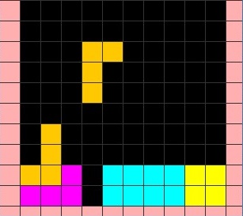
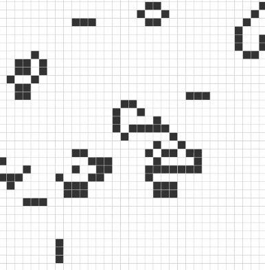
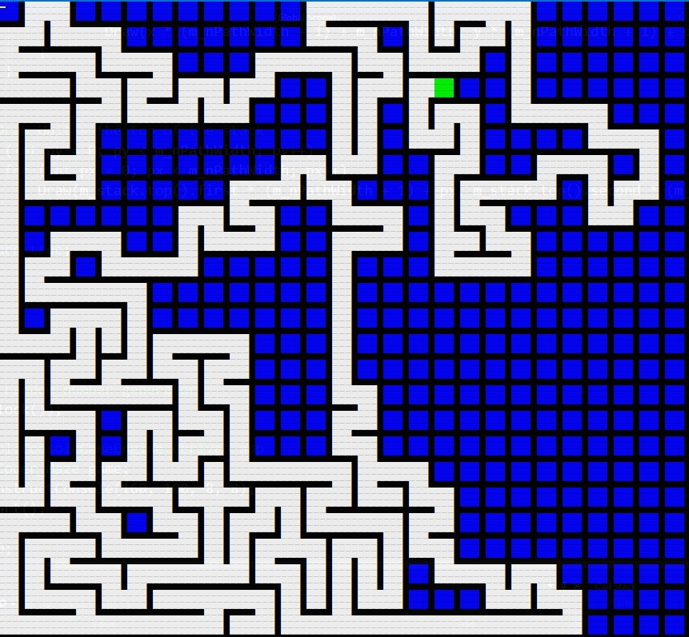
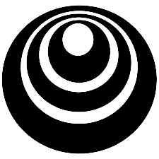

Naimul Haque
Faculty & AI Researcher in Computer Vision, Natural Language Processing and Deep Reinforcement
To pursue a challenging and research-oriented career in the fields of Artificial Intelligence.
[naimul] at [manarat.ac.bd]
[naimul] int([zero one one]) at [gmail.com]
Naimul Haque is an Assistant professor in the Department of Computer Science and Engineering at Manarat International University. He holds a Master's degree in Computer Science from Jahangirnagar University and a Bachelor's degree in Computer Science and Engineering from Ahsanullah University of Science and Technology. Naimul's research interests include Artificial Intelligence, Computer Vision, Natural Language Processing, Deep Learning, Machine Learning, and Reinforcement Learning.
Naimul has several publications to his credit, including "Bangla Toxic Comment Classification and Severity Measure Using Deep Learning" and "Automatic Bangla License Plate Recognition System for Low-Resolution Images," both accepted for presentation at international conferences. He has also contributed to research by creating an open-access dataset called "Bangla License Plate Dataset 2.5k." In addition to his research, Naimul has extensive teaching experience, having taught courses such as Artificial Intelligence, Computer Vision, Neural Network and Fuzzy Systems, and Pattern Recognition.
Naimul has also served as the Lab Director at Cognition.AI, Department of Computer Science and Engineering, School of Engineering, Science, and Technology at Manarat International University. There, he has conducted undergraduate research on Reinforcement Learning, Computer Vision, and Natural Language Processing with students. Naimul has also served as an Adjunct Lecturer in the Department of Computer Science and Engineering at Ahsanullah University of Science and Technology, where he conducted undergraduate lab classes in Operating Systems.
Naimul has programming experience as a Game Developer. He is proficient in programming languages such as Python, Java, and C++. Naimul is a dedicated researcher and teacher with an objective to pursue a challenging and research-oriented career in the fields of Computer Vision and Machine Learning.
Research Interests: • Artificial Intelligence • Computer Vision • Natural Language Processing • Deep Learning • Machine Learning • Reinforcement Learning
Experiences
Teaching Experiences
For details visit here.

Mar 2023 - Present Conducting undergraduate classes
• CSE-437: Computer Vision and Robotics[Fall 23]
• CSE-433: Neural Network and Fuzzy Systems[Fall 23]
• CSE-210: Algorithm[Fall 23]
• CSE-211: Assembly Language[Fall 23]
April 2019 - Mar 2023 (Full-Time)
Conducting undergraduate classes
• CSE-411: Artificial Intelligence [Spring 23]
• CSE-437: Computer Vision and Robotics[Fall 21][Spring 22][Fall 22]
• CSE-433: Neural Network and Fuzzy Systems[Summer 20][Summer 20][Spring 21][Spring 22][Summer 22]
• CSE-436: Pattern Recognition[Summer 20][Summer 21]
• CSE-210: Algorithm[Fall 19][Fall 20][Summer 21][Fall 21][Spring 22][Summer 22][Fall 22]
• CSE-104: Discrete Mathematics[Fall 21][Spring 22]
• CSE-314: Microprocessor and Interfacing [Sum 2019][Spring 20][Sum 20][Sum 20][Spring 21][Sum 21][Spring 22][Fall 22]
• CSE-410: Computer Networking[Summer 19]
• EEE-101: Electrical Circuits[Summer 19][Fall 19][Summer 20]
• CSE-313: System Analysis and Design[Fall 19]
• CSE-312: Software Development[Spring 20]
• CSE-414: Internet and Web Development[Spring 20][Summer 20][Fall 20]
• CSE-402: Software Engineering[Spring 20][Summer 20][Fall 20]
• CSE-211: Assembly Language[Summer 20][Fall 20][Spring 21][Fall 22]
• PHY-102: Physics[Fall 21]
• CSE-102: Structured Programming[Summer 22][Fall 22]

February 2020 - June 2020 (Contract) Department of CSE, Ahsanullah University of Science and Technology
· Conducting undergraduate Lab class: CSE 3214: Operating System.
Research Experiences

November 2020 - 2022
Cognition.AI is my Research Lab where I supervise students for their undergraduate thesis on Computer Vision and Natural Language Processing using Deep Learning.
Programming Experiences

November 2020 - 2022
I developed few indie games using Unity Game Engine. Lost is a platformer based 2D game developed using Unity and C#. Android APK is available, download, play and enjoy.
November 2020 - 2022
PythonJavaOracle PL/SQLMachine learningData analysisData scienceC#
Education

2019 - 2022
Thesis: Bangla License Plate Restoration using a Super Resolution Generative Adversarial Networks, Supervisor: Dr. Mohammad Shorif Uddin Professor, Department of CSE (JU)
CGPA: 3.53/4
2014 - 2018
Thesis: Grayscale Image Colorization, Supervisor: Dr. S.M.A. Al-Mamun P, Professor \& Dean, Department of CSE (AUST)
CGPA: 3.712/4
Publications
Published
Bangla Toxic Comment Classification and Severity Measure Using Deep Learning
Naimul Haque, Md. Bodrul, Abdullah, Towfiq, Mehorab
Accepted in - International Conference on Recent Progresses in
Science, Engineering and Technology (ICRPSET-2022) (Conference Paper)
Automatic Bangla License Plate Recognition System for Low-Resolution Images
Naimul Haque, Samira Islam, Rabeiya Afrose, Mohammad Shorif Uddin
Accepted in - 2022 4th International Conference on Sustainable Technologies for Industry 4.0 (STI), 17-18 December, Dhaka (Conference Paper)
Grayscale Portrait Colorization using CNNs and Pretrained VGG-Face Descriptor
Naimul Haque, Samin Shahriar Tokey (co-supervisor)
Accepted in - 2019 22nd International Conference on Computer and Information Technology (ICCIT), 17-18 December, Dhaka (Conference Paper)
Pre-Prints
Face-Att: Enhancing Image Captioning with Facial Attributes for Portrait Images
Naimul Haque, and Iffat Labiba
Submitted in - 2nd International Conference on Information and Communication Technology For Sustainable Developmen, 14-16 September, 2023, Bangladesh University of Professionals (Conference Paper)
Projects
Research Projects
 Backdoor Attacks on Fine-Tuned Llama-LLM for Twitter Sentiment Analysis
Backdoor Attacks on Fine-Tuned Llama-LLM for Twitter Sentiment Analysis
This project focuses on studying backdoor attacks on a fine-tuned Llama-LLM model used for Twitter sentiment analysis. The project code is provided in the "alpaca-fine-tuning twitter sentiment 1.6M.ipynb" Jupyter notebook. The goal is to investigate the potential vulnerabilities of the model to backdoor attacks and explore the use of the Alpaca LoRa framework for model quantization. Model Weights available @ HuggingFace HuggingFace.
 Real-Time Bangla Finger Spelling for Sign Language
Real-Time Bangla Finger Spelling for Sign Language
The Real-Time Bangla Digit and Alphabet Detection project aims to develop an advanced computer vision system capable of accurately detecting digits and alphabets in Bangla sign language. Leveraging the power of YOLOv5, a state-of-the-art object detection algorithm, this project will enable real-time recognition of Bangla sign language gestures for digits and alphabets. The system's ultimate goal is to utilize these real-time detections to spell out words, enhancing communication and facilitating meaningful interactions for individuals with hearing and speech impairments.
Training and Dataset Available @ RoboFlow Roboflow.
 Enhancing Face Captioning using facial attributes
Enhancing Face Captioning using facial attributes
The goal of this project is to generate accurate and descriptive captions for facial images using a combination of facial attributes and natural language processing techniques. By incorporating facial attributes, the model can generate more contextually relevant captions for each image.
Dataset Available @ Zenodo Zenodo.
Games & Simulations (Academic Projects)

TETRIS
Single player Tetris game created in C++ & Java both. Graphics added for both version. 10 different
levels
are created depending on play time with addictive scoring system.

LIFE
Zero-player game for
observing cellular
automaton & evaluation of their
growth. Recreation of Conway's game of
Life using C language & OpenGL.

MAZE
A maze creator algorithm which creates random mazes using OLC Engine & have GUI
written in C++ comes with automated maze solver plus a game to solve maze puzzle. Both program
tested on
TURBO C++.
Datasets
Datasets
Bangla License Plate Dataset 2.5k
Naimul Haque, Mirajul Islam, Afrose Tithy, Samira Islam
Published in - Zenodo, September 24, 2022 (CV-Dataset)
FaceAttDB: A Multilingual Dataset for Facial Attribute Captioning
Naimul Haque, Abida Sultana
Published in - Zenodo, June, 2023 (CV-NLP-Dataset)
nBangla Toxic Comments DB
Naimul Haque, Badrul
Published in - HuggingFace, June, 2023 (NLP-Dataset)
Competitions
Best Performances

Basically, I tried to create memory patterns for different role set i.e. defence, offence, and attack. Different RL methods have been tested for different roles. Highest skill point gained in leaderboard μ=1169.9.

Tried to put different categories of bots that are correlated to Swarm Intelligence by utilizing different NN techniques. Highest gain on the LB was μ=1085.5.
Competition was about beaviorial representation learning from ants and beetles using video dataset. We have worked with PyTorch SimCLR a Simple framework for Contrastive Learning of visual Representations for our model.
Certifications
MOOCs

DeepLearning.AI Tensorflow Developer: Professional Certificate
deeplearning.ai
Grade: 93.785%
Data-driven Astronomy
University of Sydney
Grade: 89%
 Social Psychology (with Honors)
Social Psychology (with Honors)
Wesleyan University
Grade: 92%
Others
 Triplebyte Certified
Triplebyte Certified
Triplebyte
Certification
Eterna (Solve Puzzles, Invent Medicines)
Achievements
Certification
Others
Write Ups
 Time Series Analysis
(TSA) for beginners
You have access to 10 notebooks (created using Kaggle Notebook) to get you started with Time Series
Analysis (TSA). Continue reading
to find out more.
Time Series Analysis
(TSA) for beginners
You have access to 10 notebooks (created using Kaggle Notebook) to get you started with Time Series
Analysis (TSA). Continue reading
to find out more.
TL;DR
All ten of the notebooks are briefly described in this discussion, along with links to each
notebook.
A variety of arbitrary pattern generation strategies, validations, label construction, and diverse
ML and DL techniques, including manually
constructed CNN, DNN, LSTM, and RNN using TensorFlow Sequential layers—all of which are ideal for
beginners—were tried to be provided.
The last two notebooks demonstrate basic EDA and the application of DNN and CNN to the Sunspots
dataset.
Sunspots
Dataset: Sunspots are transient occurrences on the photosphere of the Sun that
appear as spots that are darker than their surroundings. These are areas of lower surface
temperature brought on by magnetic flux concentrations that prevent convection. Sunspots typically
come in pairs with completely different magnetic polarity. (incomplete)